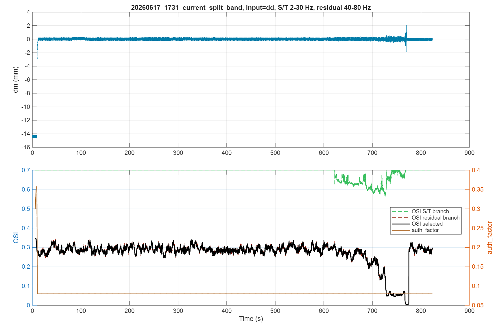
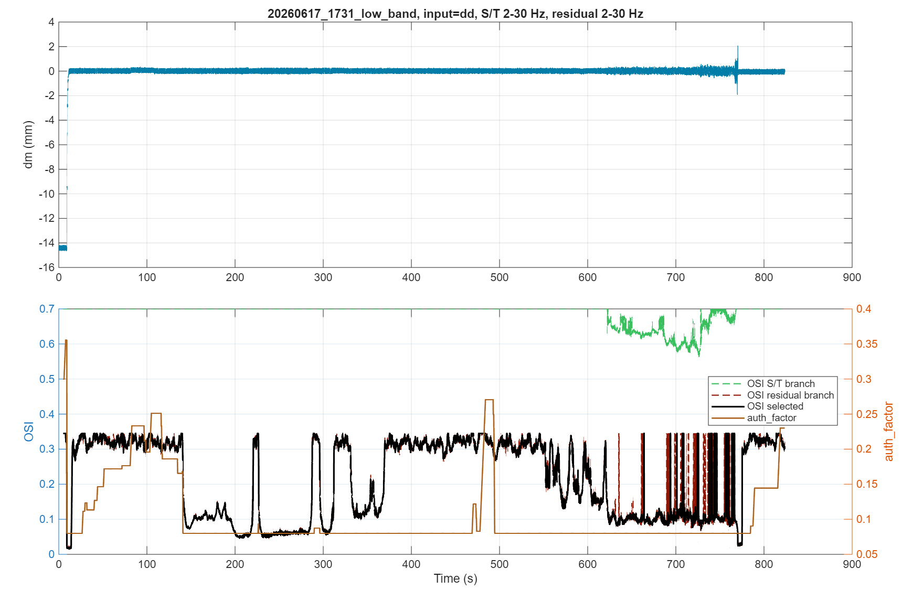
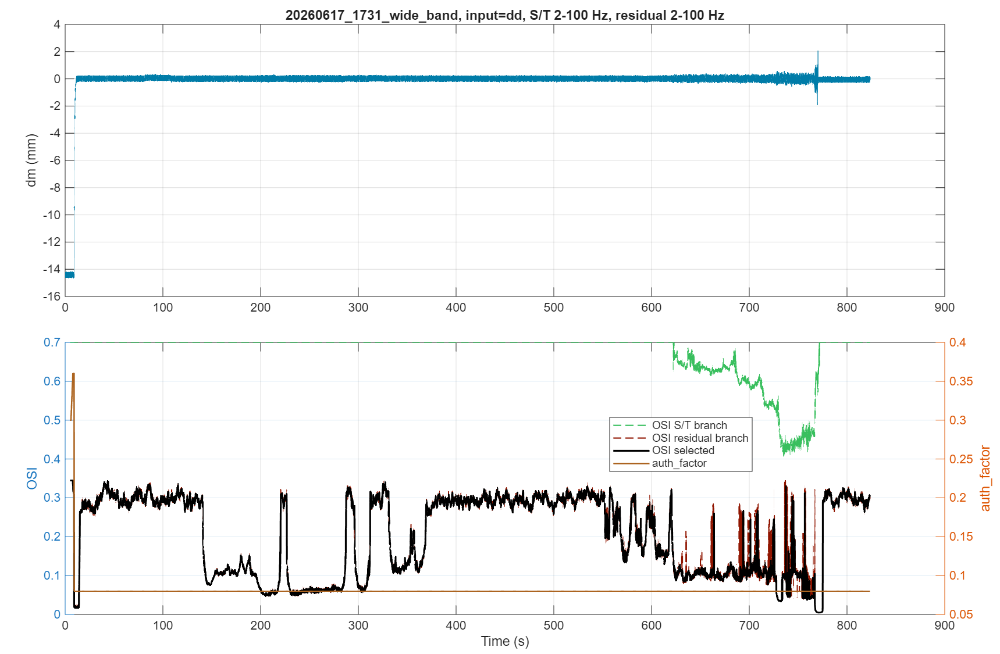
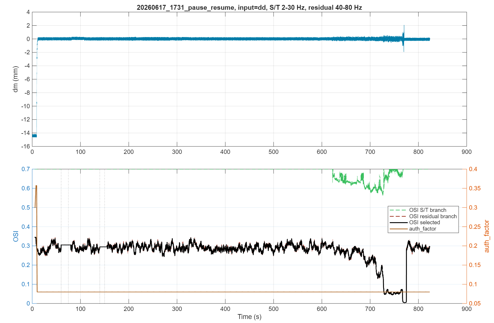
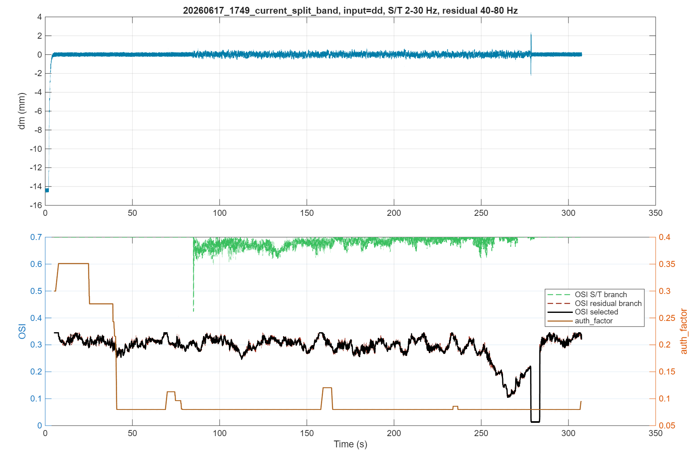
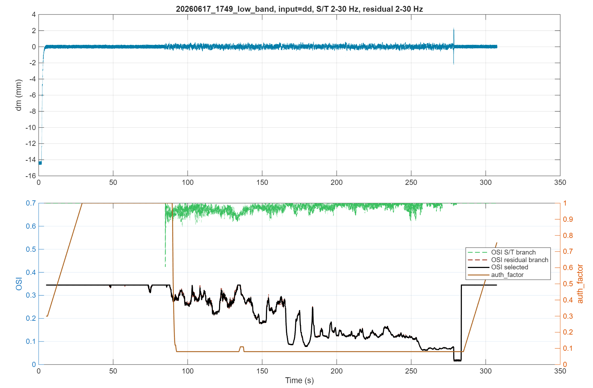
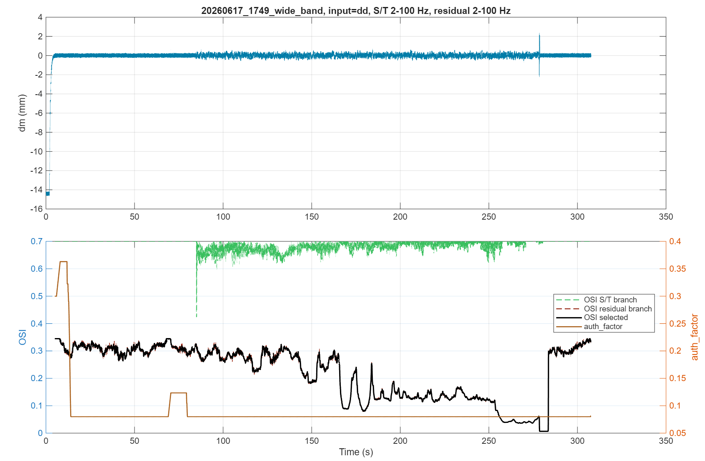
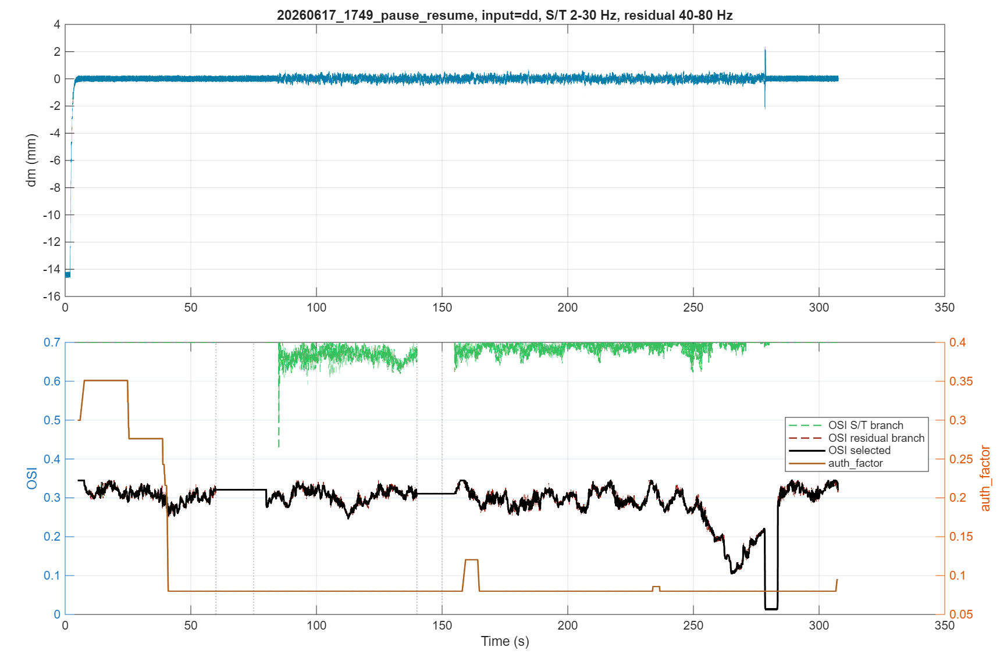

20260617_1731 current split band
Open FIG
Offline replay of the OSI_tests case matrix. Desired target NCF is 0.3. Outputs are generated from the current M9.1 estimator and authority-factor law.
| Case | Windows | Paused | Min OSI | Min auth_factor | Final auth_factor |
|---|---|---|---|---|---|
| 20260617_1731_current_split_band | 16435 | 0 | 0.0044 | 0.0800 | 0.0800 |
| 20260617_1731_low_band | 16435 | 0 | 0.0160 | 0.0800 | 0.2300 |
| 20260617_1731_wide_band | 16435 | 0 | 0.0046 | 0.0800 | 0.0800 |
| 20260617_1731_pause_resume | 16435 | 702 | 0.0044 | 0.0800 | 0.0800 |
| 20260617_1749_current_split_band | 6075 | 0 | 0.0124 | 0.0800 | 0.0950 |
| 20260617_1749_low_band | 6075 | 0 | 0.0155 | 0.0800 | 0.7565 |
| 20260617_1749_wide_band | 6075 | 0 | 0.0068 | 0.0800 | 0.0815 |
| 20260617_1749_pause_resume | 6075 | 702 | 0.0124 | 0.0800 | 0.0950 |







